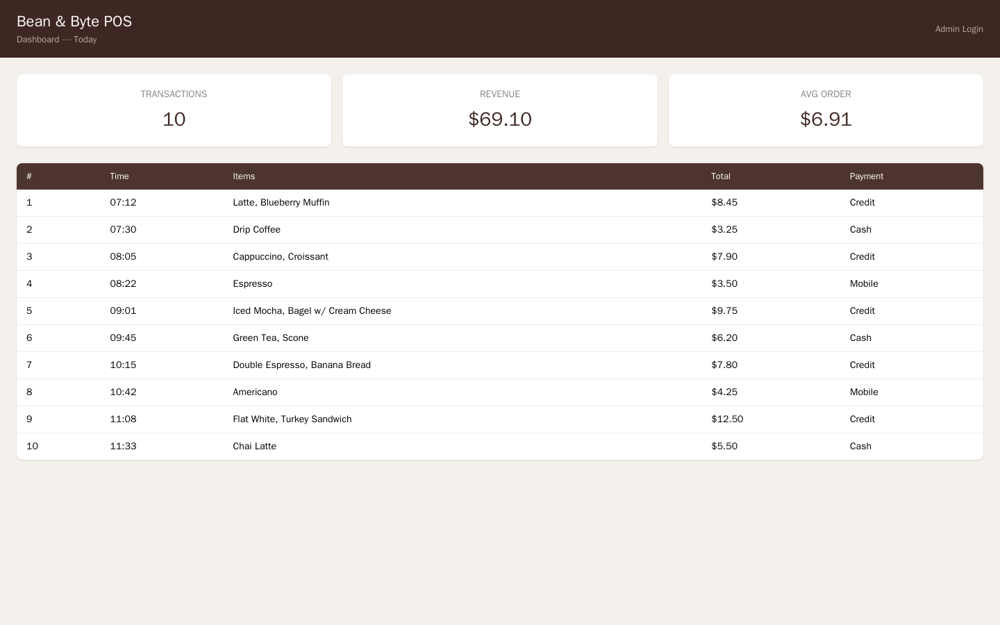
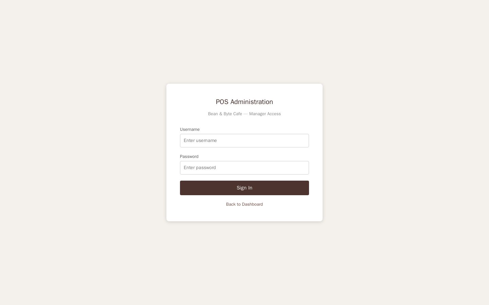
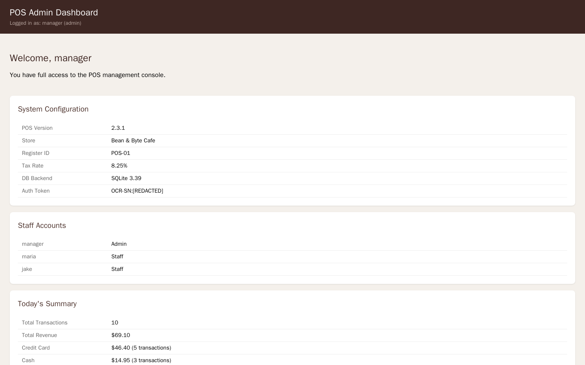

Exercise 3A: Behind the Counter
Engagement Status
| Phase | Status |
|---|---|
| Network Discovery | Complete |
| Port Scanning | Complete |
| Service Enumeration | Complete |
| Exploitation | In Progress |
What you know so far: You have mapped the entire Bean & Byte Cafe network, enumerated every protocol, extracted WiFi credentials from three sources, discovered cached tax documents on the printer, and found the SNMP write community string. Now it is time to move from enumeration to exploitation.
Flag progress: The flag has two parts, both hidden in the POS terminal web application:
| Part | Source | Vulnerability |
|---|---|---|
| 1 | Admin dashboard | SQL injection bypass |
| 2 | Debug endpoint | Exposed development artifact |
Flag format: OCR{________}
Background: When the Developer Moves On
Point-of-sale systems are high-value targets. They process payment data, manage employee accounts, and sit at the intersection of business operations and customer information. Enterprise POS systems go through rigorous security testing. But small-business POS systems, especially custom-built web applications created by freelance developers, often do not.
The Bean & Byte Cafe's POS terminal runs a web application built by a developer who "got it working" and moved on to the next contract. The application handles daily transactions, manages staff accounts, and provides an admin interface for the store manager. It was never penetration tested. It was never reviewed. It was deployed to a device on a flat network with no firewall rules.
The approach shifts here. Previous exercises focused on information collection. Now you exploit what you found. The exercise covers three classes of web application vulnerabilities:
Insecure Direct Object References (IDOR) occur when an application exposes internal data through predictable endpoints without verifying that the requester has authorization to access it. An API that returns transaction data to anyone who asks, authenticated or not, is an IDOR vulnerability.
SQL Injection occurs when user input is inserted directly into SQL queries without sanitization or parameterization. If a login form constructs its query by concatenating the username and password fields directly into a SQL string, an attacker can inject SQL syntax to bypass authentication entirely.
Exposed Debug Endpoints are development and diagnostic routes that developers create during development and forget to remove before deployment. These endpoints often dump application configuration, database schemas, environment variables, and internal credentials.
Your Objectives
- Discover the POS terminal's API endpoints and determine which ones require authentication
- Exploit SQL injection in the admin login form to bypass authentication
- Locate exposed debug and development endpoints
- Extract sensitive data including credentials, database schema, and flag tokens
Walkthrough
Step 1: Launch the Exercise
Navigate to the platform and launch "Behind the Counter." Only one container runs in this exercise: the POS terminal. Note its IP address.
Step 2: Explore the POS Dashboard
Fetch the POS dashboard
Open the POS terminal in your browser or with curl. Replace <pos_ip> with the POS terminal IP shown in the Active Lab View. The request pulls the landing page HTML so you can map the application.
The dashboard shows today's transactions, revenue, and order statistics. Look at the page carefully. There is a link to an admin login page. Note the endpoints referenced in the HTML.

Step 3: Discover the API
Query the unauthenticated transaction API
From your earlier reconnaissance, you know the POS had an API endpoint. Try accessing it. Piping through python3 -m json.tool pretty-prints the JSON so the fields are readable.
The endpoint returns every transaction from today in JSON format, including timestamps, items, totals, payment methods, and which cashier processed each sale. Notice that the request included no credentials. The endpoint has no authentication.
In a real POS system, this data would include customer payment information. The lack of authentication means any device on the network, including the customer laptop on the guest WiFi, can pull transaction records. The flaw is an IDOR vulnerability: the application references internal objects (transactions) through a direct, predictable URL with no access control.
Look at the JSON response. There is a note field that references the admin panel.
Step 4: Find the Admin Panel
Retrieve the admin login form
Navigate to the admin login form. Fetching the raw HTML reveals the form fields and the endpoint it submits to.
The response contains an HTML login form with username and password fields. The form submits via POST to the same /admin endpoint.

Step 5: Exploit SQL Injection
The login form is vulnerable to SQL injection. The application constructs its SQL query by directly inserting the username and password into the query string, allowing an attacker to inject SQL syntax that alters the query logic.
The classic authentication bypass payload:
The application builds a query like SELECT * FROM users WHERE username='admin' OR '1'='1' AND password='anything'. The OR '1'='1' clause is always true, so the query returns the first user in the database regardless of the password.
Bypass authentication with SQL injection
Submit the injection via curl. The -X POST sends the form data, and the OR '1'='1 clause in the username field forces the WHERE condition to evaluate true.
A successful injection returns the admin dashboard instead of a login failure. The admin dashboard displays system configuration, staff accounts, and a token in the Auth Token field.
The admin dashboard contains your first flag token: look for a value prefixed with OCR-SN: in the Auth Token or status fields. The token is the part after the prefix.

Step 6: Hunt for Development Artifacts
Probe for leftover development endpoints
Web applications often have endpoints that were created during development and never removed. Request each common path and watch for a non-empty response that confirms the route exists.
curl -s http://<pos_ip>:8080/debug
curl -s http://<pos_ip>:8080/status
curl -s http://<pos_ip>:8080/info
Any route that returns JSON or configuration data instead of an error is a live development artifact worth examining.
Dump the debug configuration
The /debug endpoint returns a JSON payload containing the application's full internal configuration. Pretty-print it to read the nested fields.
Examine the output. It contains:
- Database schema: the names and types of every column in every table, revealing the application's data model
- Environment variables: including SSH credentials for the barista workstation (
BARISTA_SSH=barista:C0ff33_Br3w#) - Application configuration: confirming that authentication is not required for the API, rate limiting is disabled, and CORS is open
- Endpoint listing: a complete map of every route in the application
- API token: containing the second flag token
The API_TOKEN value in the environment variables section contains your second flag token, prefixed with OCR-SN:. The token is the part after the prefix.
Step 7: Assemble the Flag
Combine the two tokens:
Submit the assembled flag on the platform.
Record Your Findings
API transaction response (first 3 entries):
SQL injection payload used:
Admin dashboard data extracted:
Field Value POS Version Auth Token Staff Accounts Debug endpoint sensitive data:
Category Finding SSH Credentials API Token Database Path Auth Required How to submit: enter the flag on the exercise page exactly as you recovered it, keeping the
OCR{...}wrapper.Flag: _________
Analysis Questions
1. The /api/transactions endpoint requires no authentication. In a real POS system, what data could an attacker extract from an unauthenticated transaction API?
Reveal Answer
In a production POS system, transaction records could include partial or full credit card numbers, customer names, email addresses, loyalty program IDs, itemized purchase histories, and employee identifiers. Even without full card numbers, transaction metadata (timestamps, amounts, payment methods) can be used for social engineering, fraud analysis, or building customer profiles. The IDOR vulnerability means any device on the network has access to this data without authentication.
2. Why does the SQL injection admin' OR '1'='1 bypass authentication? What would prevent this attack?
Reveal Answer
The application constructs its SQL query by concatenating user input directly into the query string: SELECT * FROM users WHERE username='admin' OR '1'='1' AND password='x'. The injected OR '1'='1' creates a condition that is always true, so the WHERE clause matches the first row in the users table regardless of the password. The fix is parameterized queries (also called prepared statements), where user input is passed as parameters rather than concatenated into the query string. With parameterized queries, the database treats the input as data, not as SQL syntax. Input validation and WAF rules provide defense-in-depth but are not sufficient on their own.
3. The debug endpoint exposes SSH credentials for the barista workstation. Why is credential leakage through debug endpoints particularly dangerous in a flat network?
Reveal Answer
In a flat network with no segmentation, every device can reach every other device. The barista workstation SSH credentials leaked through the POS debug endpoint allow an attacker to pivot from the POS terminal to the barista workstation. From there, they have access to the SMB shares, which contain additional credentials and employee data. Debug endpoints that expose cross-system credentials turn a single-application vulnerability into a network-wide compromise. Defense-in-depth therefore requires both removing debug endpoints AND segmenting the network: either control alone is insufficient.
Defensive Recommendations
-
Implement authentication on all API endpoints: the transaction API should require a valid session token or API key. Never expose internal data through unauthenticated routes.
-
Use parameterized queries: replace all string-concatenated SQL queries with parameterized statements. Parameterization eliminates SQL injection entirely regardless of input content.
-
Remove debug endpoints before deployment: use environment-based configuration to ensure debug routes are only available in development environments. Implement a deployment checklist that verifies no development artifacts remain.
-
Never store cross-system credentials in environment variables or application config: use a secrets manager or vault. Credentials for other systems should never be accessible through the application's own configuration.
-
Implement rate limiting and logging on login endpoints: failed login attempts should be logged and trigger alerts. Rate limiting prevents automated credential stuffing and injection testing.
-
Deploy a Web Application Firewall (WAF): a WAF can detect and block common SQL injection patterns. A WAF is a defense-in-depth measure, not a replacement for secure coding.
Key Takeaways
- POS systems and embedded web applications are often built without security review and deployed with development artifacts intact
- Unauthenticated API endpoints expose sensitive business data to anyone on the network
- SQL injection remains one of the most common and impactful web vulnerabilities: parameterized queries are the definitive fix
- Debug endpoints frequently leak credentials, database schemas, and internal configuration that enable lateral movement
- Findings from one vulnerability (debug credentials) enable exploitation of other systems (barista workstation SSH): this is how attack chains form
- In flat networks, a single application compromise can cascade into full network access